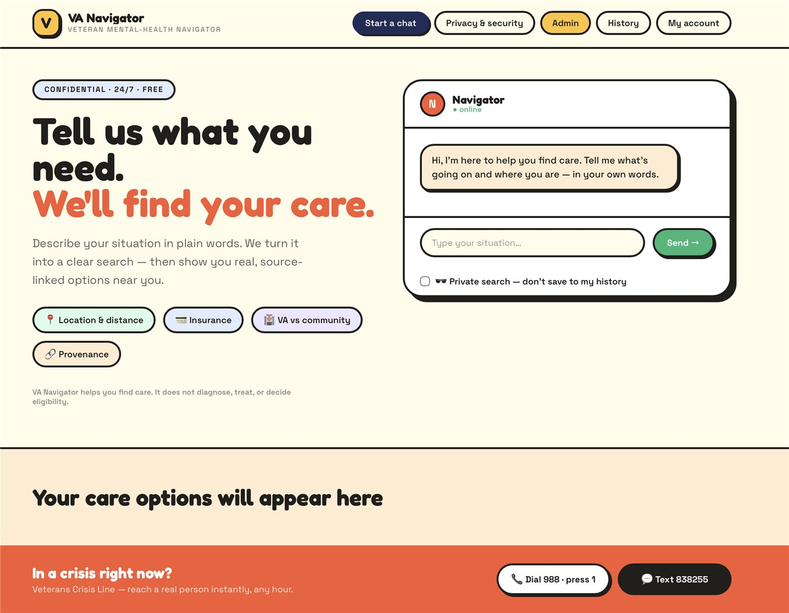
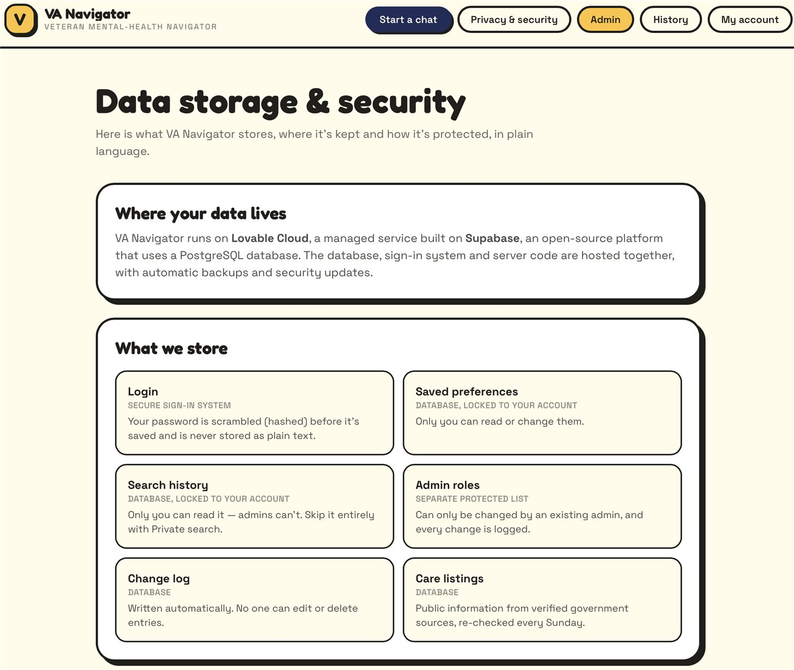
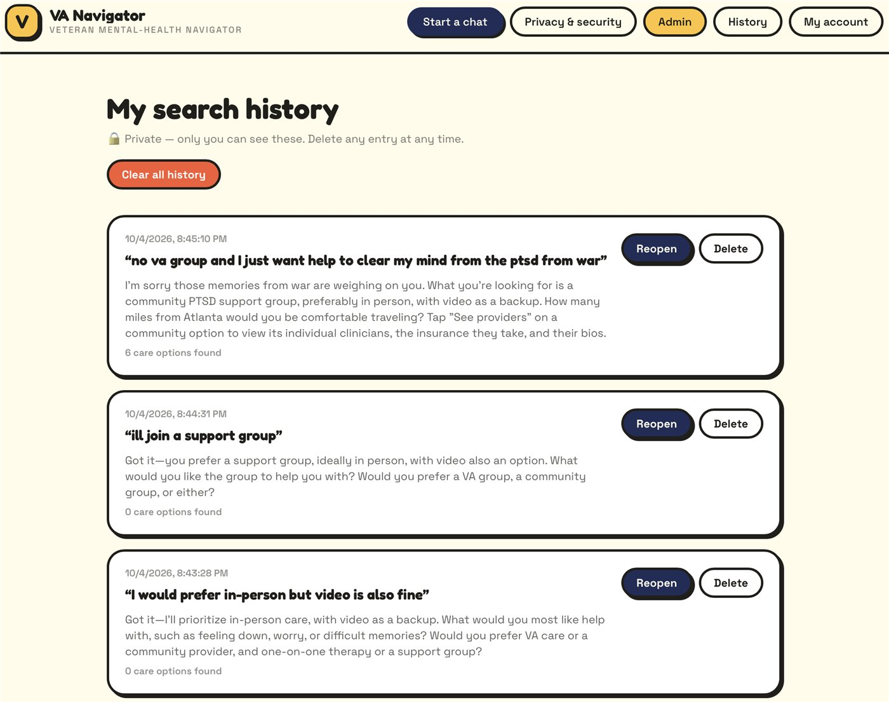
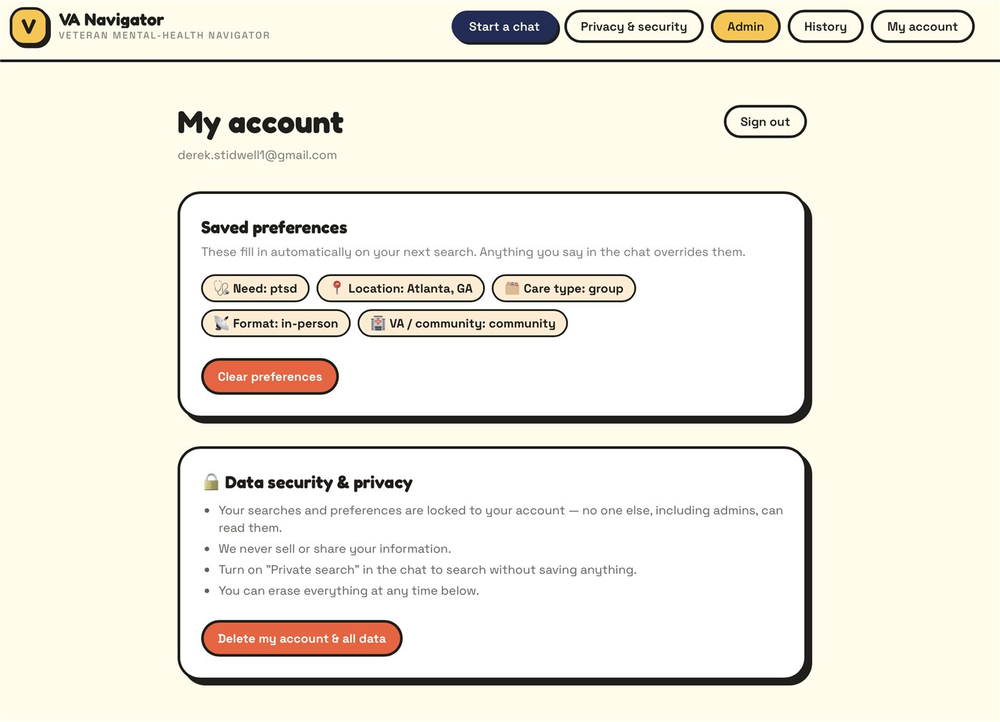
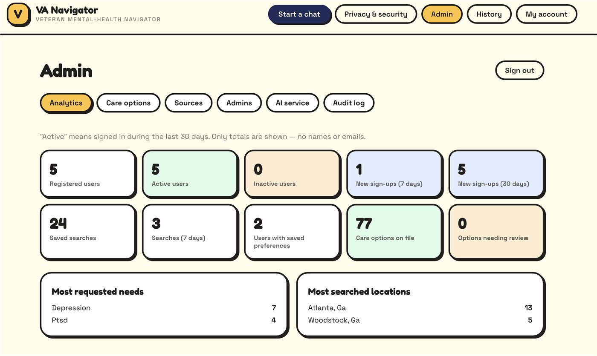

Describe what you need. Find care that fits.
VA Navigator is a web app that turns a Veteran's plain-language request into nearby mental-health options from VA and community providers, each one linked to its source.

Why Veterans get stuck
Mental-health care for Veterans is spread across VA medical centers, outpatient clinics, Vet Centers, telehealth, and community providers. Knowing where to start is hard.
Care is hard to find
Options live on different sites with different rules, and few of them answer the question a Veteran actually has.
Trust is low
Some Veterans distrust the VA to provide care and want to see community options side by side.
Disabilities get in the way
Long forms and dense directories are a barrier for anyone who finds navigation difficult.
It's overwhelming
When someone is already struggling, a maze of links makes it easy to feel lost and give up.
How it works
Every request runs through the same five steps. The safety check comes first, before anything else happens.
-
Describe it
The Veteran types their situation in plain words: where they are, what they're dealing with, and what kind of care they want.
-
Safety check
If the message suggests harm to self or others, the Veterans Crisis Line (988, press 1, or text 838255) appears right away. Local matches still follow.
-
Understand the need
An AI model pulls out the search details: city and state, clinical need such as PTSD, in-person or virtual, one-on-one or group, and VA or community.
-
Search real sources
A directory of about 1,610 VA medical centers, clinics, and Vet Centers, plus live results from FindTreatment.gov and the CMS NPI Registry. "Community only" filters out every VA option.
-
Rank and show
Results are ranked by distance, need, format, and insurance. Each one shows its source and the date it was last verified.
VA Navigator helps people find care. It does not diagnose, treat, or decide eligibility. Private searches are never saved.
Inside the app
Screenshots from the working prototype, Milestone 2.




What it's built with
Security work so far includes row-level security, admin lockout, prompt-injection protection, and patched dependencies.
- App
- TanStack StartReactTailwind CSS
- Data
- SupabasePostgreSQL with row-level security
- AI
- OpenRouterGrok-family model
- Care sources
- VA facility directoryFindTreatment.gov (SAMHSA)CMS NPI Registry
- Hosting
- Lovable Cloud
The team
Four IT students at Kennesaw State. We're happy to talk about the project, internships, and jobs.
Sponsors
Nikhil Kassetty, Ravitez Dondeti, and Sai Vineela Ganti
Professor
Donald Privitera, IT 4983 Capstone
School
Kennesaw State University, College of Computing and Software Engineering